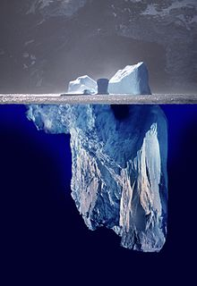

Definición Iceberg
El término “iceberg del internet” se refiere a una analogía que compara la parte visible y superficial del internet con un iceberg. Al igual que un iceberg flotante en el océano, solo vemos una pequeña porción de lo que realmente compone el internet.
